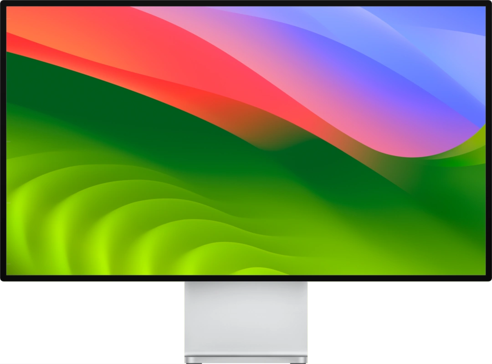

About
BrightIntosh enables your MacBook Pro® M1 (or newer) to use the increased brightness of its Liquid Retina XDR® display anytime. By default this is only possible when displaying HDR content.
Compatibility

MacBook Pro
- M1 Pro, M1 Max (2021)
- M2 Pro, M2 Max (2023)
- M3, M3 Pro, M3 Max (2023)

Pro Display XDR
Disclaimer
This tool should not harm your display as macOS® is in full control over the display brightness.
However this software comes with no warranty or guarantees. Users take full
responsibility for any problems that arise from the use of this software.
By using the BrightIntosh application you accept the above.